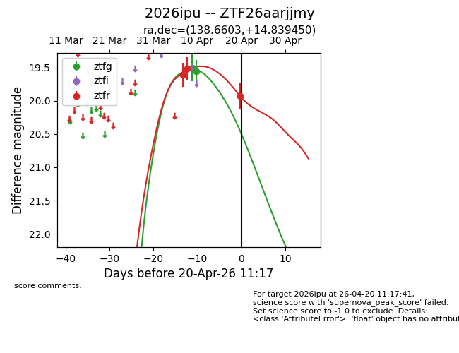
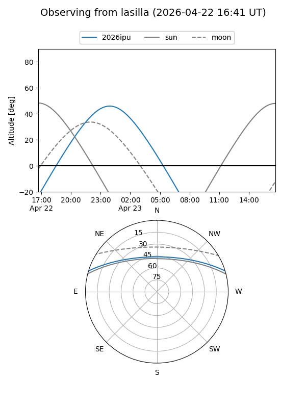
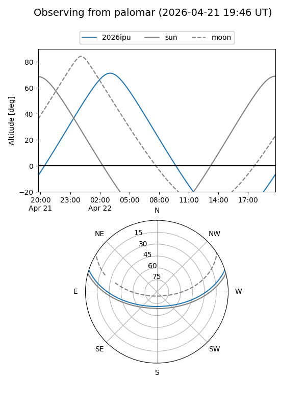
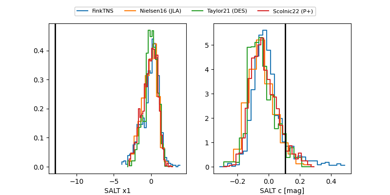

2026ipu
Target 2026ipu at 2026-04-20 11:27
Aliases and brokers:
FINK: link
Lasair: link
ALeRCE: link
TNS: link
YSE: link
alt names
ZTF26aarjjmy (ztf,fink_ztf)
2026ipu (tns,yse)
Coordinates:
equatorial (ra, dec) = 138.6603,+14.83945
equatorial (HMS+DMS) = 09:14:38.46,+14:50:22.02
galactic (l, b) = (215.1163,+38.31862)
Flags:
Photometry:
last ztfg=19.56, ztfr=19.92
2 ztfg, 3 ztfr detections
Lightcurve

Visibility


Additional plots
